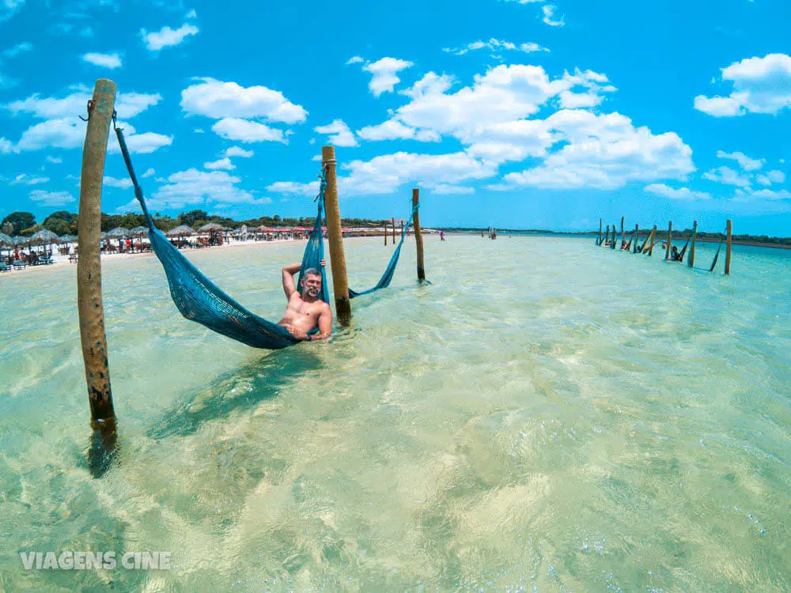
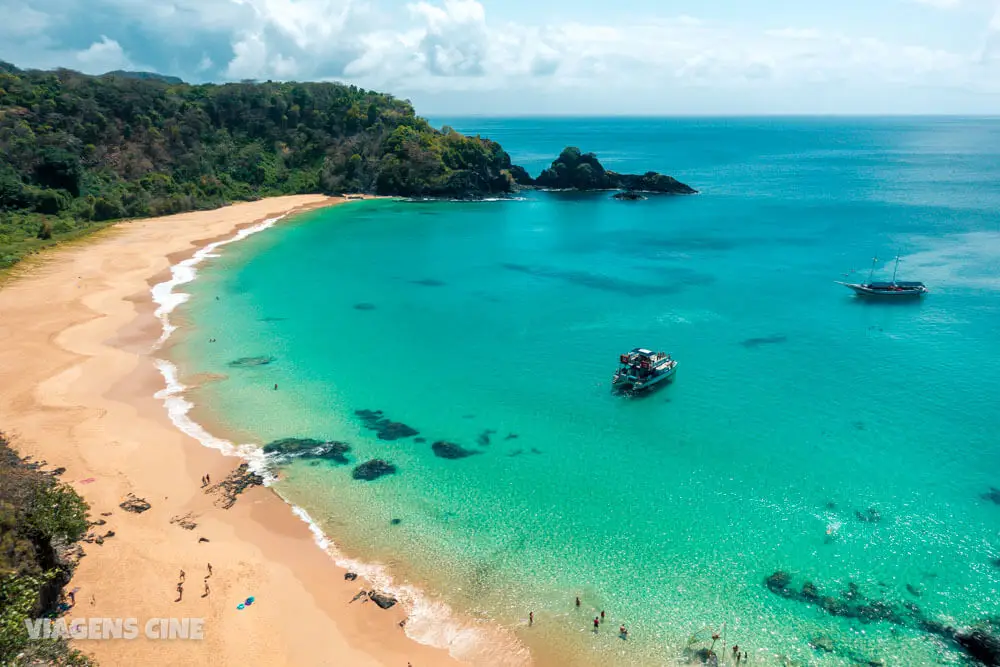

Os cinco melhores passeios turísticos no Brasil
-
Costa dos Corais - Alagoas
O litoral de Alagoas é considerado por muita gente, o mais bonito do Brasil. O mar azul turquesa, com águas mornas e cristalinas, levou muita gente a apelidar a região de Caribe Brasileiro.
A Costa dos Corais é considerada um dos melhores roteiros de viagem do Brasil. A rota começa em Recife e termina em Maceió (ou você pode fazer no sentido inverso) e você tem a oportunidade de visitar o litoral mais bonito do Brasil.
-
Região dos Lagos - Rio de janeiro.

Arraial do Cabo concentra algumas das melhores praias do Brasil, como as Prainhas do Pontal do Atalaia ou a Praia do Farol. O destino é um dos lugares nacionais conhecidos como Caribe Brasileiro, pela beleza e transparência de suas águas.
-
Porto de Galinhas - Pernambuco

O destino também é um dos mais populares entre os brasileiros: na quantidade de pesquisas no Google, Porto de Galinhas é um dos lugares para viajar que está sempre no topo.
-
Jericoacoara - Ceará
A praia ainda faz parte do Parque Nacional de Jericoacoara, o que garante as famosas ruas de areia onde não podem circular carros (somente circulam os passeios de buggy). Os que se aventuram em ir com carros de passeio, devem deixá-los em estacionamentos na entrada da vila.
Jeri (para os íntimos ou para quem tem dificuldade de pronunciar o nome extenso) já foi considerada uma das praias mais bonitas do mundo. Na lista do TripAdvisor, ela vem subindo no ranking entre os lugares para viajar.
-
Fernando de Noronha - Pernambuco
Não há como resistir aos encantos naturais de Noronha. É lá que fica a Baía do Sancho, já considerada pelo público do TripAdvisor como a praia mais bonita do mundo (em 2018 ela ficou na segunda posição).
Em 2022, a Baía do Sancho ainda entrou na lista das 10 melhores praias do mundo, do site TripAdvisor, mas caiu para a sétima posição.